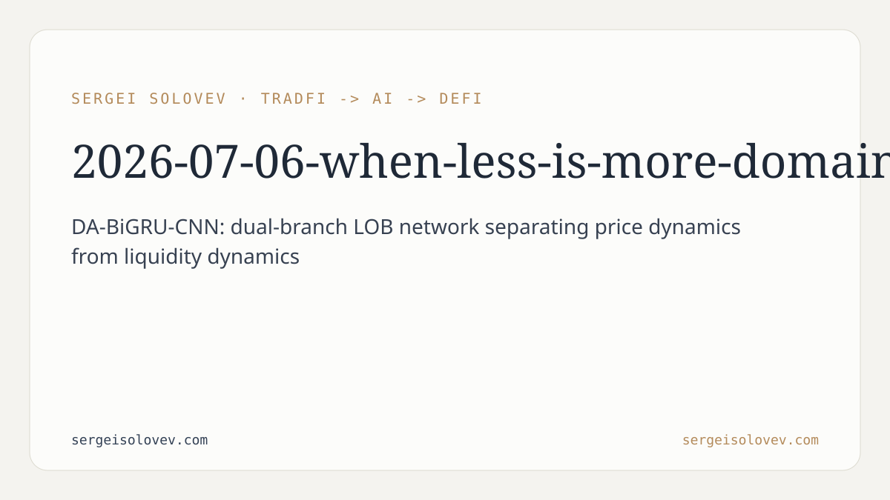

```markdown
---
title: "When Less Is More: Domain-Aware Dual-Branch Recurrent Networks for LOB Mid-Price Prediction"
date: 2026-07-06
slug: when-less-is-more-domain-aware
meta_description: DA-BiGRU-CNN for LOB mid-price prediction: 53 vs 219 features, negative ensemble effects, and DeFi applicability. Preprint results.
tags: [quant]
canonical_doi: 10.6084/m9.figshare.31859557
---
Predicting short-term mid-price movements from limit order book (LOB) data is one of those problems that looks tractable until you are in it. The input is high-dimensional and highly redundant: a full LOB snapshot carries price and volume at multiple depth levels, sampled at high frequency, with structure that is simultaneously noisy at the surface and informative in aggregate. The standard practitioner response is to engineer more features—rolling averages, exponential moving averages, lag differences, cross-level ratios—and stack a diverse ensemble on top to collect the performance gains. Intuition says that more information plus more models equals better prediction. This paper challenges both parts of that assumption and documents a third finding: a domain-aware dual-branch architecture that separates price dynamics from liquidity dynamics on principled grounds, rather than treating the LOB feature matrix as a homogeneous slab.
The central proposal is DA-BiGRU-CNN, a dual-branch network designed around a basic fact of microstructure: price and volume in a limit order book are semantically distinct. Price levels encode where market participants are willing to transact; volume levels encode how much they are willing to commit at each price. Feeding both into a single undifferentiated encoder ignores this structure. DA-BiGRU-CNN instead decomposes the LOB feature space into a price channel and a volume channel and routes each through its own dedicated bidirectional GRU encoder. Bidirectional processing lets each encoder attend to both past and future context within the sequence window, which is useful for capturing the mean-reverting and momentum dynamics that characterize short-horizon LOB prediction.
The two encoders share a set of microstructure features—information that cuts across both channels, such as spread and depth imbalance signals—rather than forcing a hard partition that would lose cross-channel dependencies. After encoding, the price and volume representations are fused through a multi-scale convolutional bottleneck built from Conv1d layers with kernel sizes 3, 5, and 7. The three kernel sizes capture temporal patterns at different resolutions without requiring the practitioner to specify lookback windows by hand. The entire design reflects domain knowledge about how LOB data is structured, rather than a grid-searched architecture optimized post hoc.
The second contribution addresses feature engineering directly. We trained a unidirectional GRU on 53 basic LOB features—the raw price and volume columns, minimally preprocessed—and compared it against the same architecture trained on 219 features, where the additional 166 columns were rolling statistics, exponential moving averages, and lag and difference transformations. The extended feature set represents the standard engineering effort in LOB prediction: hand-crafted temporal structure that the engineer believes the model would otherwise miss.
The two models achieved statistically equivalent performance. This is not a marginal difference in a noisy metric—the result is a systematic finding we call the "feature sufficiency" hypothesis: a recurrent hidden state is itself a learned temporal accumulation. When you add explicit rolling averages and lag features on top, you are giving the model information it was already computing internally. The extra columns add computational cost and pipeline complexity without adding predictive signal. The hidden state implicitly learns the temporal patterns that engineers manually encode in feature engineering pipelines.
The third finding is a direct caution against default ensemble strategies in sequence prediction. Ensemble methods work when constituent models make independent errors: combining them reduces variance by averaging out uncorrelated noise. We tested a natural candidate—combining a GRU, which explicitly models sequence order, with LightGBM, which treats each timestep as an independent tabular observation. On the surface these two model classes look sufficiently diverse to benefit from combination: one is sequence-aware, one is not; one is neural, one is tree-based.
The results say otherwise. In every configuration tested, blending GRU and LightGBM predictions consistently degraded performance compared to the GRU alone. We call this the negative ensemble effect, and it contradicts the widely held assumption that model diversity automatically improves ensemble performance. The most plausible mechanism: LightGBM's inductive bias—assuming feature independence, ignoring temporal structure entirely—introduces systematic error on LOB data that is correlated with, rather than independent of, the GRU's errors. Averaging two models whose errors align does not reduce variance; it amplifies noise from the weaker model.
All experiments ran on a dataset of 12,165 LOB sequences comprising 12.1 million timesteps. Using weighted Pearson correlation as the primary evaluation metric, the GRU baseline achieved 0.266, outperforming LightGBM by 58%. DA-BiGRU-CNN offers an architecturally principled alternative that naturally separates price dynamics from liquidity dynamics—a decomposition motivated by microstructure theory. The architecture's claim is not the highest raw number; it is a better-reasoned inductive bias grounded in what we know about how markets work.
For practitioners building predictive infrastructure on LOB data—whether on centralized exchanges or on-chain LOB protocols in decentralized finance—the feature sufficiency result has a direct operational consequence: you can skip the feature engineering pipeline. Rolling windows, EMAs, lag features are expensive to compute at inference time, fragile to maintain when market structure shifts, and statistically redundant in the recurrent setting. A GRU trained on 53 basic features matches one trained on 219. That is roughly a 4x reduction in feature dimensionality at no performance cost. In production this means simpler data pipelines, lower latency preprocessing, and fewer transformations that can introduce bugs or drift. For DeFi protocols where off-chain inference feeds on-chain execution, computational simplicity is not just an engineering preference—it is a design constraint.
The negative ensemble finding is a corrective against reflexive model stacking. In quantitative finance, combining signal sources is common practice: alpha combination, volatility forecast ensembles, execution model blends. The default assumption is that diversity helps. In the LOB sequence setting it does not, at least not when one model in the stack is fundamentally sequence-blind. For anyone building prediction infrastructure that touches LOB data, this is a concrete reason to benchmark the simplest sequence model before stacking additional models on top. More broadly, it is a prompt to test empirically whether the diversity assumption holds before accepting it as given—in LOB prediction, in volatility forecasting, in any regime where temporal structure is the dominant signal.
The dataset covers a single market environment; whether these results transfer to equities, options, or cross-venue settings is untested. The feature sufficiency finding is specific to recurrent architectures with sufficient hidden-state capacity—attention-based and feed-forward models may respond differently to engineered features. The negative ensemble effect is empirical, not theoretically derived: we document the phenomenon and offer a plausible mechanism, but a rigorous characterization of when and why ensemble diversity fails in time-series settings remains open. Next steps include evaluating DA-BiGRU-CNN on on-chain LOB data from DeFi protocols, where microstructure dynamics differ materially from centralized markets, and systematically testing whether the negative ensemble effect persists across different asset classes, training regimes, and ensemble construction strategies.
```bibtex
@misc{solovev2026lob,
author = {Solovev, Sergei},
title = {When Less Is More: Domain-Aware Dual-Branch Recurrent Networks
for Limit Order Book Mid-Price Prediction},
year = {2026},
doi = {10.6084/m9.figshare.31859557},
url = {https://doi.org/10.6084/m9.figshare.31859557},
note = {Preprint}
}
```
```